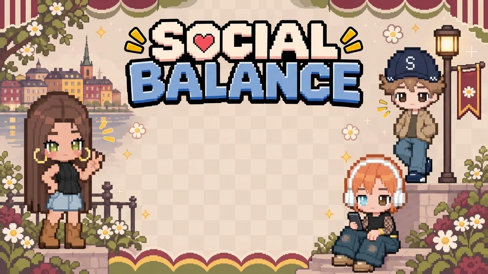
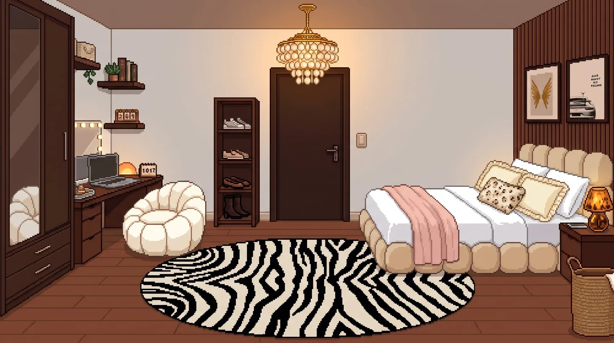
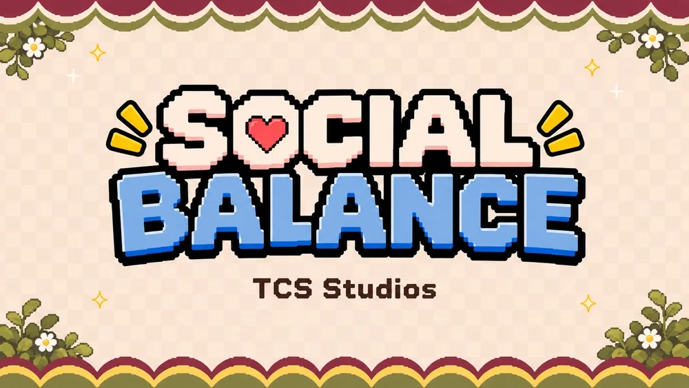

Un domingo por organizar.
Son las 8:00 a. m. Tienes cinco actividades académicas pendientes. El día avanza y tu energía no es infinita.
EL RELOJ ESTÁ CORRIENDOUn juego pixel art sobre la vida real
Un día. Cinco responsabilidades.
El tiempo no se detiene.
Organiza tus tareas, cuida tu energía y descubre cómo cada decisión puede cambiar tu día. Porque encontrar el equilibrio también es parte del juego.

En SocialBalance vivirás un día en la vida de un estudiante. Cada actividad tiene un costo, cada elección una consecuencia.

Son las 8:00 a. m. Tienes cinco actividades académicas pendientes. El día avanza y tu energía no es infinita.
EL RELOJ ESTÁ CORRIENDOEstudiar, descansar y usar el celular compiten por tu tiempo. Lo que haces ahora afecta cómo enfrentarás lo que viene después.
CADA ACCIÓN TIENE UN EFECTONo se trata de abandonar las redes sociales, sino de aprender a integrarlas conscientemente en tu rutina, sin descuidar tus responsabilidades.
TU TIEMPO, TUS DECISIONESElige a tu personaje y prepárate para comenzar el día. Los tres protagonistas y sus animaciones provienen directamente del videojuego.
Haz clic en un personaje para verlo caminar.
El juego combina gestión del tiempo y bienestar digital. Las actividades modifican energía, estrés y concentración; el reloj sigue avanzando.
Tu capacidad para continuar con las actividades.
La presión acumulada durante el día.
Tu capacidad para mantener la atención.
Prueba una versión simplificada de dos acciones reales del juego:
Consulta las tareas y empieza los minijuegos.
Alivia el estrés, pero consume tiempo y recursos.
Recupera energía y concentración descansando.
Cada desafío pone a prueba una habilidad distinta. Selecciona una actividad para descubrir cómo funciona.
Observa las cartas, recuerda dónde está cada imagen y encuentra las seis parejas. Una prueba de atención que también exige administrar el tiempo.
En la versión completa, las cartas pasan por distintas fases: memorizar, jugar y resolver el resultado.Resuelve retos de palabras y números siguiendo reglas distintas. Cada variante valida la respuesta de una manera diferente.
El juego utiliza estrategias de validación intercambiables para sus variantes.Arrastra cada afirmación hacia la respuesta correcta. Las decisiones giran alrededor de los buenos hábitos digitales.
Tres errores terminan el intento en el videojuego.Relaciona conceptos con sus definiciones mediante conexiones visuales. Puedes deshacer la última conexión antes de verificar.
La pilaPilaConexiones recupera las conexiones en orden inverso: la última es la primera en deshacerse.Coloca cinco tarjetas en la secuencia correcta arrastrándolas y soltándolas. El reto trabaja la organización y la toma de decisiones.
Los pasos de esta ilustración son un ejemplo visual, no una partida del juego.SocialBalance fue desarrollado en Java con Processing. Detrás de cada animación hay lógica, estructuras de datos y una arquitectura orientada a objetos.
La lógica del minijuego cambia según su fase. En lugar de resolver todo con un único bloque de condiciones, cada estado gestiona su comportamiento.
El minijuego conserva su flujo general mientras cambia la regla que valida la respuesta. Puedes explorar las tres estrategias utilizadas.
Una clase base Minijuego define operaciones comunes, mientras GestorMinijuegos coordina los retos. Cada actividad conserva su lógica particular.
PilaConexiones permite deshacer conexiones en orden LIFO.
Organizan cartas, conceptos, definiciones y valores temporales.
GestorGuardado conserva información para continuar una partida.
GestorTareas y ListaTareas organizan las actividades.
En una prueba inicial con seis participantes, se valoró la usabilidad mediante nueve preguntas. Los resultados orientan mejoras en estadísticas, mensajes y navegación.
Un proyecto universitario que reúne programación, diseño, creatividad y aprendizaje.
El videojuego completo se ejecuta con Processing. Puedes explorar el repositorio, revisar el código y descargar el proyecto.
Para jugar: instala Processing → abre SocialBalance/SocialBalance.pde → pulsa Ejecutar.
